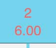

1. Tap on the audio icon in the main menu bar at the top to open the audio panel.
2. Tap on the left button in the transport controls then on the play (right) button and let your composition play to the end. If you want to play around with a pre-written score, we have supplied "Daisy" which you will find at the very bottom of the templates in the score manager after tapping on 'Create a new score.'
3. Make sure scrub is on under the audio settings menu, then drag the playhead  over your score to scrub the music.
Result: You have learned the basics of the audio panel.